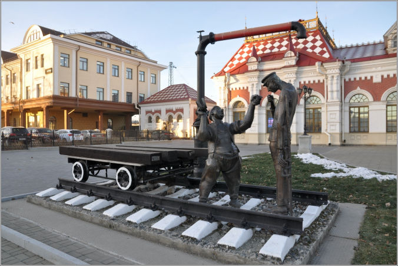
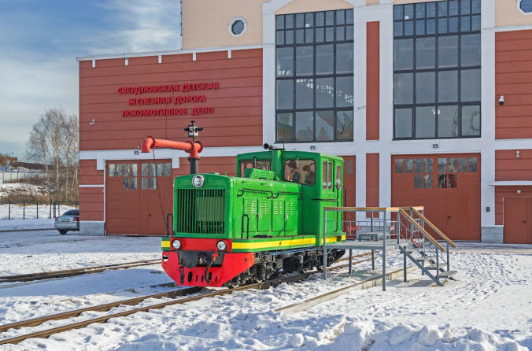
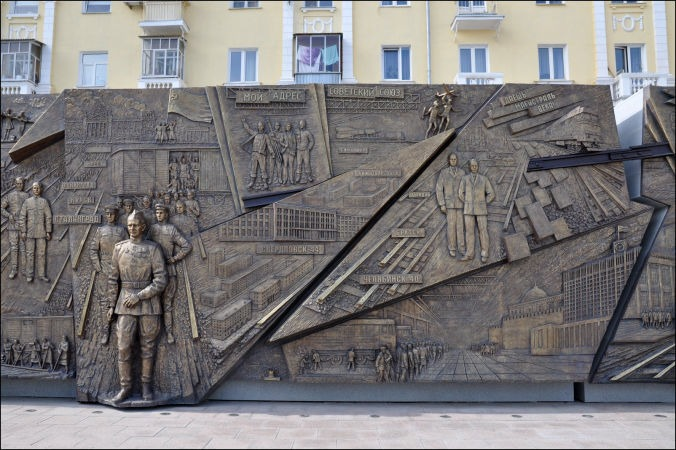

Музей истории, науки и техники Свердловской железной дороги
Приглашаем всех любителей истории железных дорог и желающих разобраться и проникнуться тем, как устроена железная дорога и эксплуатируемая на ней техника.

Музей узкоколейных железных дорог. Екатеринбург
Рады вам представить уникальную коллекцию узкоколейной железнодорожной техники, размещенной в комплексе зданий и сооружений Свердловской детской железной дороги.

Памятник-барельеф «Железные дороги в истории России»
По памятнику, как по учебнику вы сможете изучить историю государства и этапы становления железнодорожного транспорта с начала XIX века до современности.

Виртуальный тур по Детской Железной дороге
Панорамы объектов Детской железной дороги, музея Узкоколейной техники и Кванториума. Приятного просмотра!

ПОДЕЛИТЕСЬ ЭТОЙ СТРАНИЦЕЙ